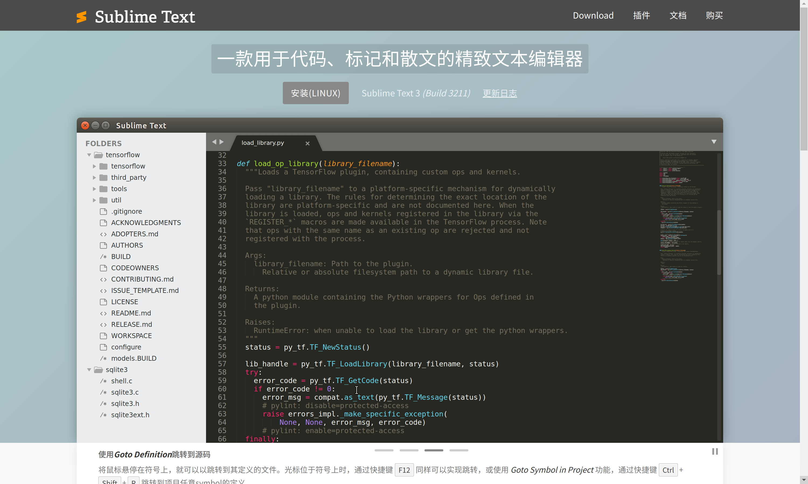
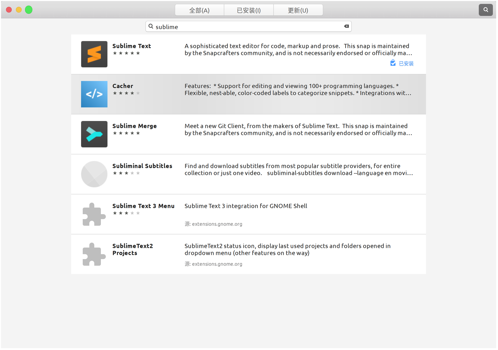
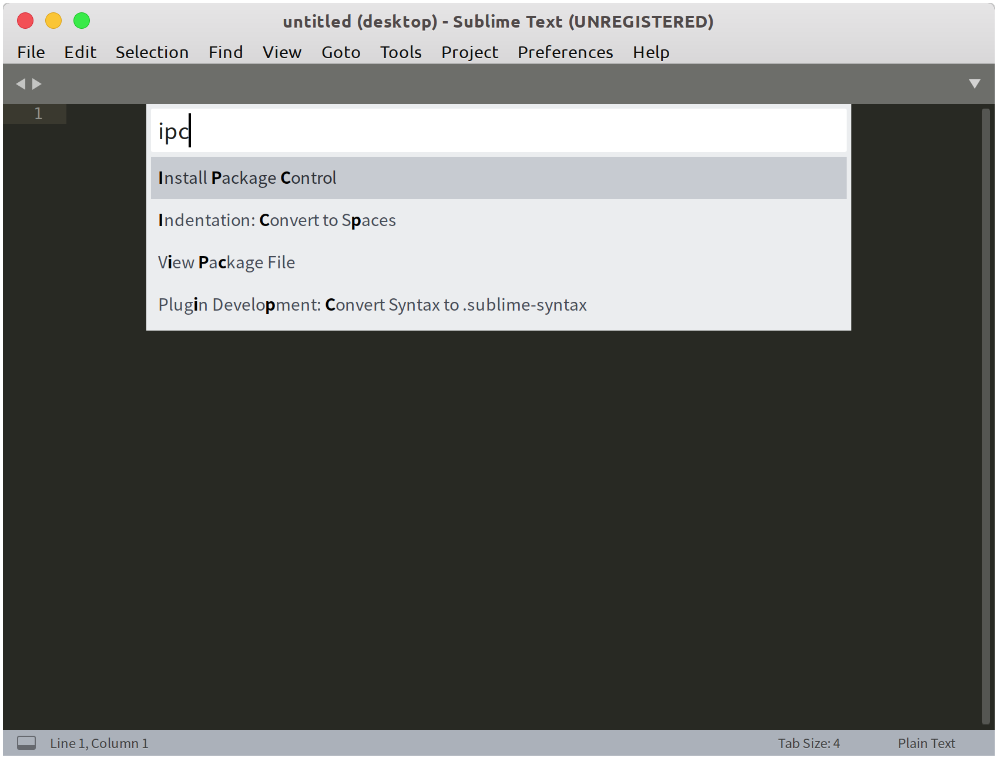

打开 Sublime 的正确姿势

下载
👉 Sublime Text （这是中文镜像站，官网: sublimetext.com ）
安装这种东西有手就行
Ubuntu 的话直接在 Ubuntu商店里搜就有了：

插件
ctrl+shift+p 调出命令面板，选择 Install Package Control

左下角会有 [ = ] 的图标，中间的等号不停得动，稍等片刻，
本博客所有文章除特别声明外，均采用 CC BY-NC-SA 4.0 许可协议。转载请注明来自 Jason Fan.！
评论
WalineGitalk